Assignment Source: NYTimes.com
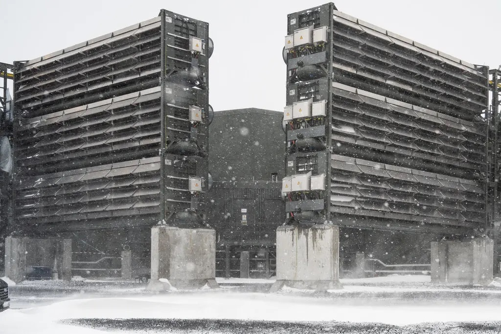Francesca Jones for The New York Times
On a windswept Icelandic plateau, an international team of engineers and executives is powering up an innovative machine designed to alter the very composition of Earth's atmosphere.
If all goes as planned, the enormous vacuum will soon be sucking up vast quantities of air, stripping out carbon dioxide and then locking away those greenhouse gases deep underground in ancient stone — greenhouse gases that would otherwise continue heating up the globe.
Just a few years ago, technologies like these, that attempt to re-engineer the natural environment, were on the scientific fringe. They were too expensive, too impractical, too sci-fi. But with the dangers from climate change worsening, and the world failing to meet its goals of slashing greenhouse gas emissions, they are quickly moving to the mainstream among both scientists and investors, despite questions about their effectiveness and safety.
Researchers are studying ways to block some of the sun's radiation. They are testing whether adding iron to the ocean could carry carbon dioxide to the sea floor. They are hatching plans to build giant parasols in space. And with massive facilities like the one in Iceland, they are seeking to reduce the concentration of carbon dioxide in the air.
As the scale and urgency of the climate crisis has crystallized, “people have woken up and are looking to see if there's any miraculous, deus ex machina that can help,” said Al Gore, the former vice president.
Since the dawn of the industrial age, humans have pumped huge volumes of heat-trapping gases into the atmosphere in pursuit of industry and advancement. It amounted to a remaking of the planet's delicately balanced atmosphere that today has transformed the world, intensifying heat, worsening droughts and storms and threatening human progress.
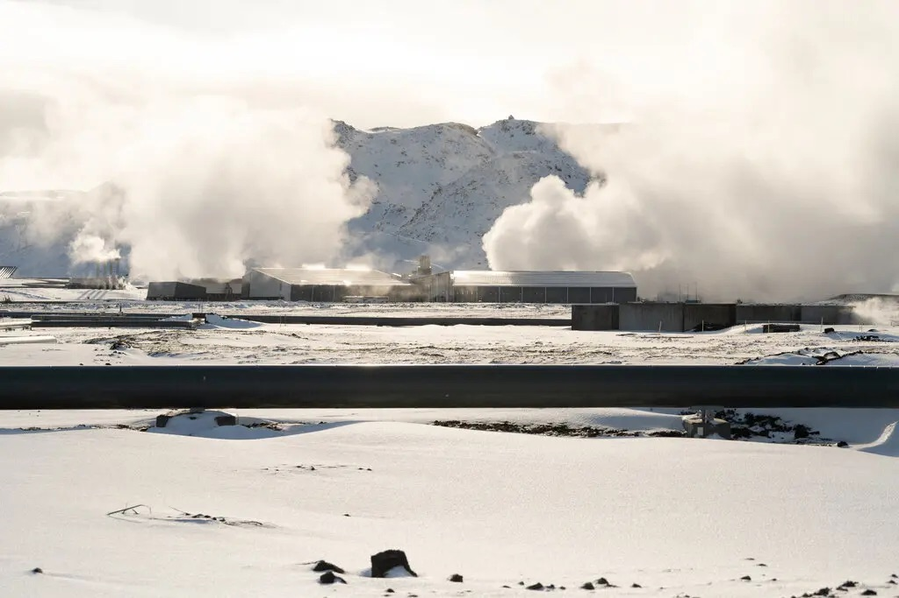The plant will be powered by geothermal energy. Francesca Jones for The New York Times
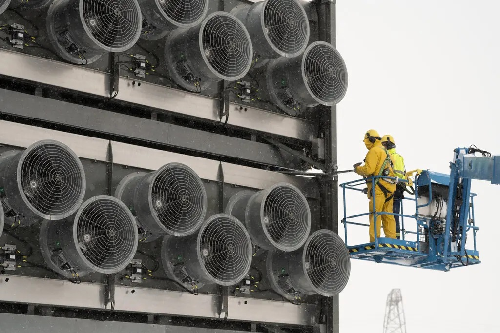“Collector containers” where air is pulled in. Francesca Jones for The New York Times
As the risks became clearer, political and corporate leaders pledged to keep global average temperatures to no more than 1.5 degrees Celsius higher than before the Industrial Revolution. But for several months last year, the world briefly passed that symbolic threshold, sooner than many scientists expected.
Global temperatures are now expected to rise as much as 4 degrees Celsius, or more than 7 degrees Fahrenheit, by the end of the century. That has given new weight to what some people call geoengineering, though that term has become so contentious its proponents now prefer the term “climate interventions.” The hope is that taking steps like these might buy some time at a moment when energy consumption is on the rise, and the world isn't quitting fossil fuels fast enough.
Many of the projects are controversial. A plant similar to the one in Iceland, but far larger, is being built in Texas by Occidental Petroleum, the giant oil company. Occidental intends to use some of the carbon dioxide it captures to extract even more oil, the burning of which is one of the main causes of the climate crisis in the first place.
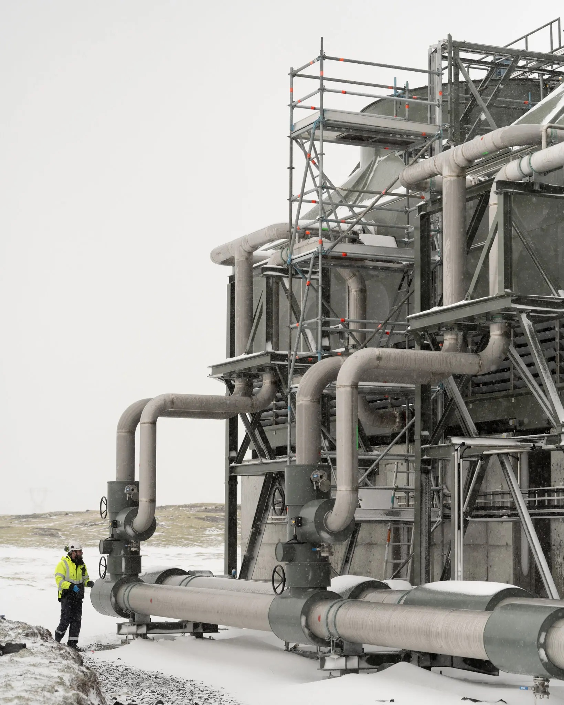The carbon dioxide is pumped into the bedrock. Francesca Jones for The New York Times
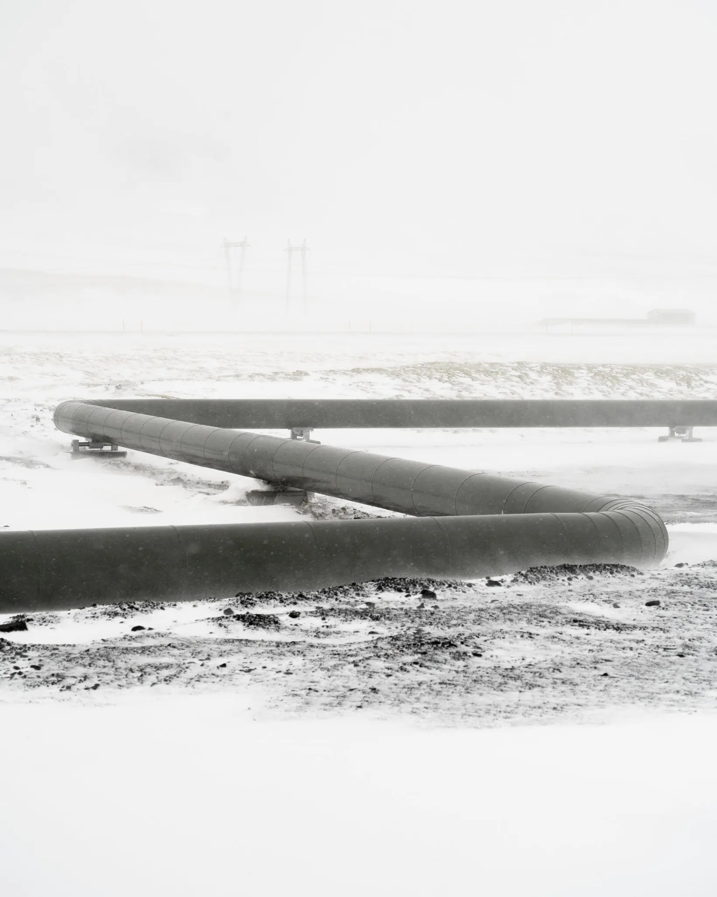Deep underground, the gas turns into a solid, locking it away.Francesca Jones for The New York Times
Some critics say that other types of interventions could open up a Pandora's box of new problems by scrambling weather patterns or amplifying human suffering through unintended consequences. In effect they are asking: Should humans be experimenting with the environment in this way? Do we know enough to understand the risks?
“We need more information so we can make these decisions in the future,” said Alan Robock, a professor of atmospheric science at Rutgers University. “Which is riskier: to do it, or not to do it?”
Others argue that fanciful or costly technologies will simply waste resources and time, or lull people with the false idea that it will be possible to slow global warming without phasing out fossil fuels.
There is also the risk of rogue actors barreling ahead with their own efforts to change the climate. Already, Mexico has banned what's known as solar radiation modification after a start-up from California released sulfur dioxide into the atmosphere without permission.
And then there is the fact that, because these technologies are so new, there is relatively little regulation governing them.
“There are these much bigger questions around who decides how is this is all coordinated over time,” said Marion Hourdequin, a professor of environmental philosophy at Colorado College. “We don't have a great track record of sustained global cooperation.”
With a subzero wind whipping down from the fjords, Edda Aradottir trudged through fresh snow to inspect the direct air capture plant in Iceland.
Ms. Aradottir is the chief executive of Carbfix, an Icelandic company that is working with the Swiss start-up that built the plant, Climeworks. Known as Mammoth, the project is a technological accomplishment, powered by clean geothermal energy and capable of capturing up to 36,000 metric tons of carbon dioxide per year and pumping it down into the bedrock.
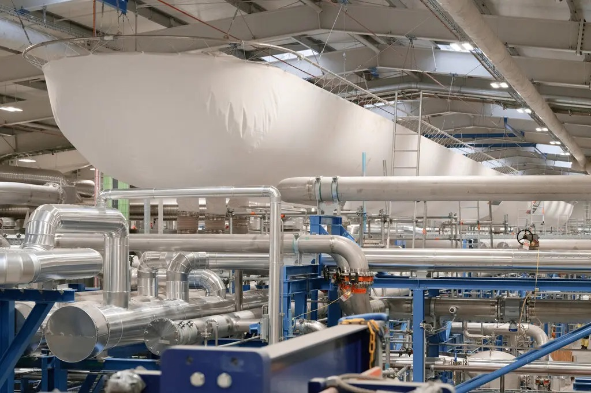A balloon full of carbon dioxide. Francesca Jones for The New York Times
That is just one one-millionth of annual global emissions. But unlike trees, which can be cut down or catch fire, Climeworks promises to store that carbon dioxide forever.
Inside a series of bunkerlike buildings, dozens of huge fans suck air into bins that contain chemical pellets that absorb carbon dioxide, then release the gas when they are heated up. The carbon dioxide is then mixed with water and pumped more than a mile below the surface, where extreme pressure turns it into a solid in a matter of years, a process known as “mineralization.” In effect, the gas becomes part of the rock.
“Over 99 percent of the carbon on Earth is already stored in rocks in the form of minerals,” Ms. Aradottir said. “Naturally, it happens over geologic time scales. We're speeding it up.”
When Mammoth is turned on in the coming weeks, it will be the largest such facility in the world, even though the amount of carbon it can absorb is still just a drop in the bucket. Global carbon dioxide emissions hit an all-time high of 36 billion metric tons last year.
The Occidental plant, being built near Odessa, Texas, and known as Stratos, will be more than 10 times more powerful than Mammoth, powered by solar energy, and have the potential to capture and sequester 500,000 metric tons of carbon dioxide per year.
It uses a different process to extract carbon dioxide from the air, though the goal is the same: Most of it will be locked away deep underground. But at least some of the carbon dioxide, Occidental says, will also be used to extract more oil.
In that process, carbon dioxide is pumped into the ground to force out oil that might otherwise be too difficult to reach. Techniques like this have made Occidental a company worth more than $50 billion and helped send American crude production to a new high in recent years.
Of course, it is the world's reliance on the burning of oil and other fossil fuels that has so dangerously sent carbon dioxide levels soaring. In the atmosphere, carbon dioxide acts as a blanket, trapping the sun's heat and warming the world.
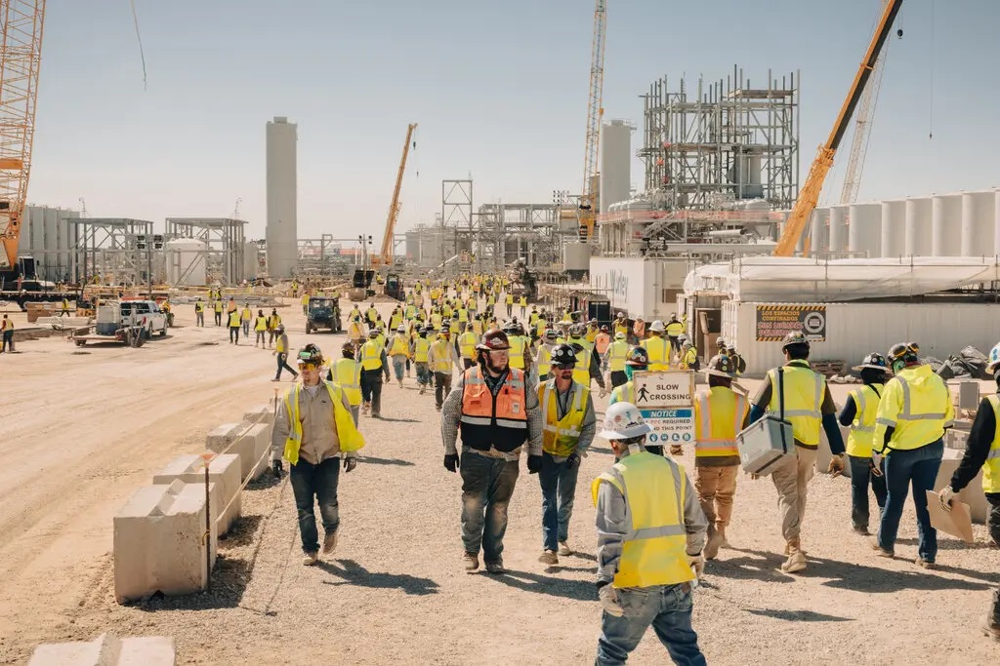The Occidental carbon-capturing plant, known as Stratos, under construction in Texas. Ariana Gomez for The New York Times
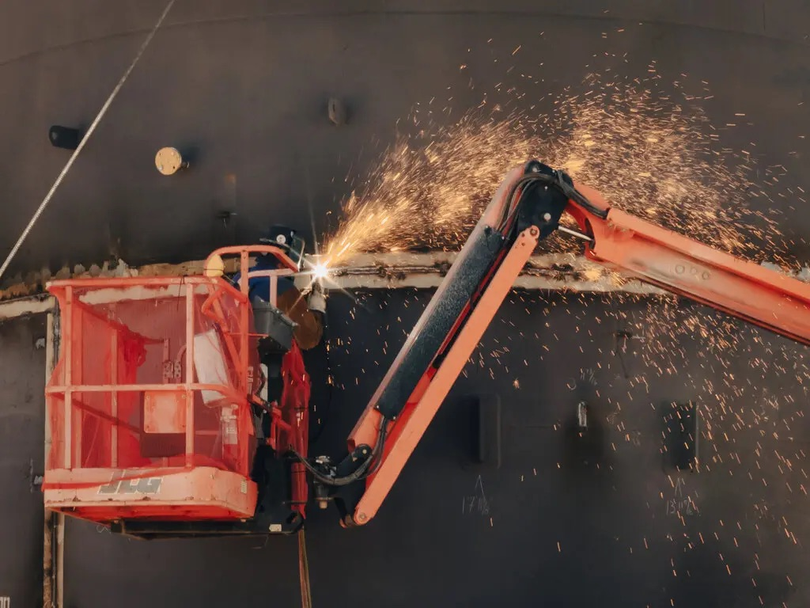The Texas facility will be much larger than the Icelandic one.Ariana Gomez for The New York Times
Today, Occidental says it is trying to become a “carbon management” company as well as an oil producer. Last year, it paid $1.1 billion for a start-up called Carbon Engineering that had developed a way to soak up carbon dioxide from the air, and began building the Stratos project. Today, what was a barren plot of dirt less than 12 months ago is a bustling construction site.
“It's like the Apollo missions at NASA,” said Richard Jackson, who oversees carbon management and domestic oil operations at Occidental. “We're trying to move as quickly as we can.”
In coming years, Occidental said it planned to build 100 facilities, each capable of capturing 1 million metric tons of carbon dioxide a year. It has struck up a financial partnership with BlackRock, the world's largest asset manager, and made a deal to develop direct air capture plants with Adnoc, the United Arab Emirates' state oil company.
In South Texas, it is planning to build 30 of the plants on the King Ranch, funded in part by $1.2 billion the Biden administration last year awarded to direct air capture projects.
Climeworks also has aggressive expansion plans. It secured a portion of the White House funds for a direct air capture plant in Louisiana, is working with a group of Kenyan entrepreneurs to build a large facility outside Nairobi and has plans to construct plants in Canada and other countries in Europe.
Driving the construction boom is the desire of many corporations to reduce their effect on global warming. Over the past decade, hundreds of multinational corporations have pledged to become carbon neutral by 2040. Rather than phasing out fossil fuels to meet those goals, most companies are finding that they have to pay for carbon credits, which can be acquired by preserving forests, supporting renewable energy projects or paying for carbon sequestration.
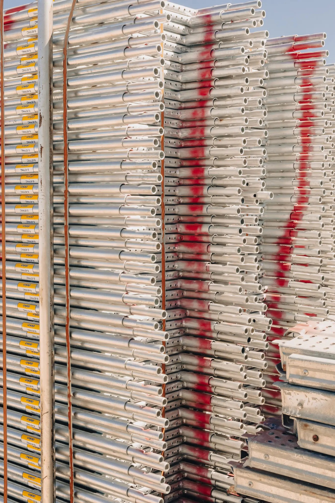Some of the carbon dioxide in Texas will be used to extract oil from the ground. Ariana Gomez for The New York Times
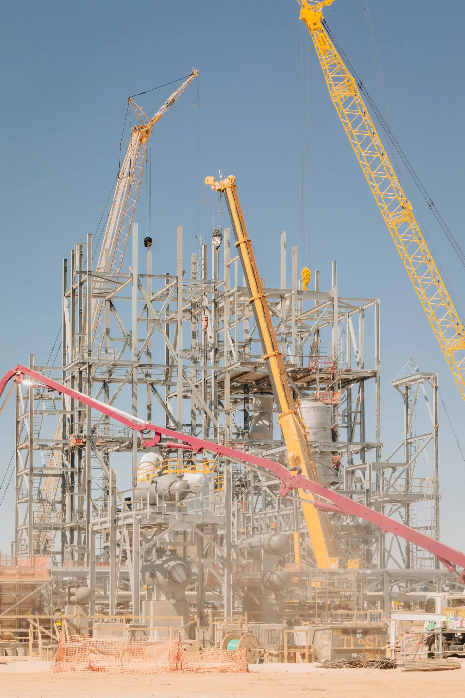Occidental says it intends to build 100 plants. Ariana Gomez for The New York Times
Microsoft, JPMorgan and UBS are some of the big companies that have signed long term agreements to buy credits from Climeworks. Amazon, AT&T and the Houston Astros are among those signed up with Occidental.
Bill Gates, the Microsoft co-founder, said last year that he was the largest individual customer of Climeworks, paying the company $10 million each year to offset his sizable carbon footprint.
Yet the grand plans envisioned by direct air capture companies, with hundreds of plants built in the years ahead, are predicated on a market that does not yet exist. Only a handful of big companies have so far proved willing to voluntarily spend millions of dollars on direct air capture credits, and there is no guarantee that the rest of the corporate world will follow suit anytime soon.
Even if more companies do decide to start offsetting their emissions, there are cheaper ways to do so, including by preserving forests and paying for renewable energy. For example, it currently costs between $500 and $1,000 to capture a metric ton of carbon dioxide with direct air capture, compared with just $10 to $30 per ton for most carbon credits today.
“It's very expensive,” said Mr. Robock. “And so it's not going to be a solution in the short term or the long term.”
Still, the business world is bullish. Boston Consulting Group expects more companies to begin buying credits to pay for carbon dioxide removal, and more governments to encourage that buying. In the United States and Europe, governments have started subsidizing the construction of the plants. By 2040, BCG expects the market for carbon dioxide removal technologies could grow from less than $10 billion today to as much as $135 billion.
“Companies will face a rising price on carbon and regulatory pressures that will make them feel compelled to do this,” said Rich Lesser, the global chair of BCG.
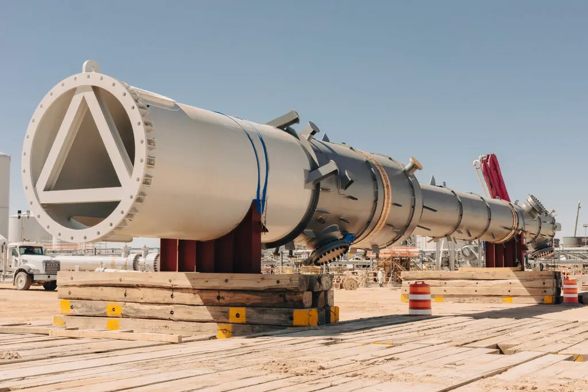Near Odessa, Texas. Ariana Gomez for The New York Times
Although the direct air capture market is still in its infancy, it already has vociferous detractors in academia, activist circles and beyond.
Some say it is little more than a ploy by oil and gas companies to prolong the very industries that are responsible for creating global warming. They point to the extensive evidence that fossil fuel interests for years worked to play down public awareness of climate change, and the fact that some of the captured carbon will be used for additional oil production.
Those concerns were magnified when Vicki Hollub, Occidental's chief executive, last year said direct air capture could “preserve our industry.” She added, “This gives our industry a license to continue to operate for the 60, 70, 80 years that I think it's going to be very much needed.”
Scientists say an urgent transition away from fossil fuels is necessary to avoid extreme global temperature increases. Last year, nearly 200 countries agreed to begin phasing out oil, coal and gas.
“This is a new wave of denial, deception and delay,” said Lili Fuhr, director of the fossil economy program at the Center for International Environmental Law. “You have the fossil fuel industry trying to say we can engineer our way out of this without any major changes to business as usual.”
A related line of reasoning holds that the enormous amounts of clean energy needed to power direct air capture plants would be better used powering homes and businesses, thereby displacing fossil fuels such as natural gas and coal that still provide much of the world's electricity.
Ms. Fuhr added that the costs remained high in spite of a growing raft of government support, including a tax credit in the United States worth $180 for every metric ton of carbon dioxide that is captured and stored, a subsidy that is likely to significantly lower Occidental's tax bill in the years ahead. “The industry has been successful in capturing subsidies, just not carbon,” she said.
And then there is the fact that even if Occidental and Climeworks make good on their ambitions to build hundreds of new plants in the coming years, they would still not come close to capturing even 1 percent of current annual global emissions.
Mark Z. Jacobson, a professor of civil and environmental engineering at Stanford University, said climate interventions in general, and carbon capture in particular, were dangerous distractions from the more urgent work of rapidly reducing the use of fossil fuels.
“There are many solutions that are just not helpful at all, that do not help an iota for climate and don't help an iota for air pollution,” he said. “Among these are direct air capture.”
Proponents of the technology say that with fossil fuel emissions continuing to rise, the world is fast approaching the moment when any and all solutions to abate global warming should be on the table.
At the least, direct air capture has a role to play, they say, because there might always be at least some greenhouse gases being produced in the future, even if the vast majority of emissions are successfully eliminated. Sucking that carbon dioxide out of the air will be valuable, the argument goes.
But in the longer term, many scientists believe it will be necessary to go further and actually try to remove some of the excess carbon dioxide that has dangerously accumulated over the centuries. Proponents of direct air capture say their technology is suited for such a herculean task.
“No one is arguing you could solve all our carbon emissions with this,” Mr. Lesser said. “But it could be a meaningful part of solving a huge problem.”
The past year's record temperatures, warming oceans and megafires are all evidence of a deeply uncomfortable reality: We've already been manipulating the planet for the past couple hundred years. In less time than it takes a redwood tree to reach its full height, humans have added enough carbon dioxide to the atmosphere to scramble weather patterns, melt glaciers and wipe out coral reefs.
Viewed this way, today's attempts to slow down or even reverse the warming can be seen as efforts to undo the changes that have already taken place. Whether or not humans can succeed in this most ambitious feat is unclear. It is among the most consequential problems our species has faced.
Yet as people begin to deliberately tinker with the climate in new ways, there are profound questions that are only beginning to be contemplated. If the current extreme weather and temperature rise came about inadvertently, as the unintentional consequence of human development, what might happen when we begin actively trying to control the planet's atmosphere?
“It's true that we have been altering the climate through greenhouse gas emissions for centuries now,” said Ms. Hourdequin of Colorado College. “But trying to intentionally manage the climate through geoengineering would be a distinctive endeavor, quite different than the kind of haphazard interference that we've engaged in thus far.”